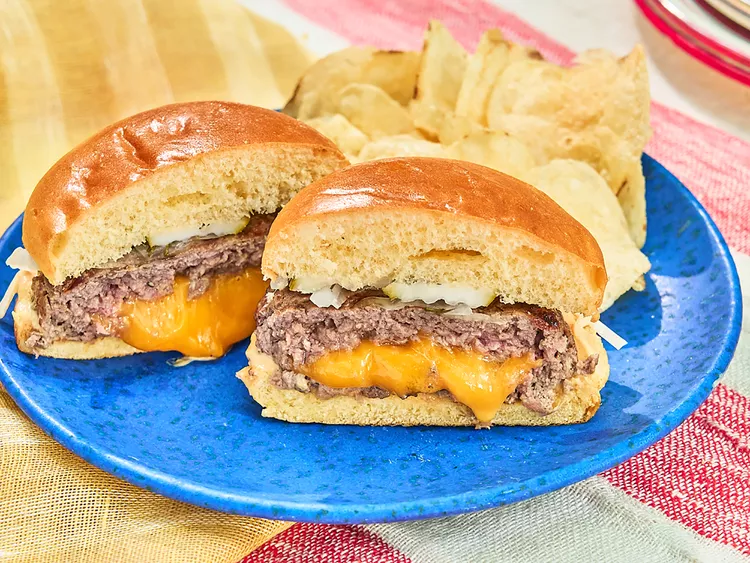

Home
Juicy Lucy Chadder Burgers

These juicy Lucy Cheddar burgers are absolutely loaded with gooey Cheddar cheese sealed within 2 patties. They are grilled to perfection with a surprise inside.
Ingredients:
- 1/2 pounds ground round
- 1 tablespoon Worcestershire sauce
- 1 teaspoon salt
- 1 teaspoon freshly ground black pepper
- 3/4 teaspoon garlic powder
- 6 slices Cheddar cheese, cut into quarters
- 4 burger buns, toasted
- onion slices, pickle slices, mayonnaise, mustard, and ketchup for serving
Steps:
- Combine ground beef, Worcestershire, salt, pepper, and garlic powder in a bowl. Mix meat mixture gently to combine and shape into 8 patties.
- Stack quartered cheese slices, 6 pieces per burger, onto the center of 4 of the burger patties. Top each burger with a second patty and pinch the edges to seal the burger tightly.
- Preheat an outdoor grill for medium-high heat. Cook burgers undisturbed on one side for 4 minutes, or until grill marks appear and burger releases easily from the grill. Flip and continue to cook until burger has puffed in the center slightly and is browned on the other side.
- Serve burgers on toasted buns with desired toppings.